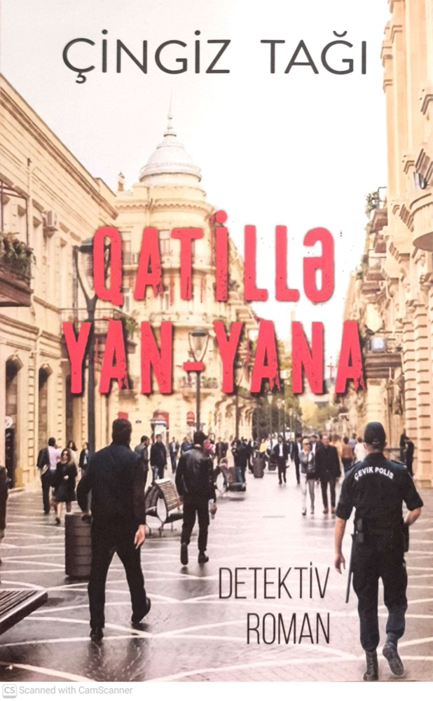

- Nəşr ili
- 2024
- Dil
- Azərbaycan, Rus
- Janr
- Detektiv roman
← Bütün kitablar
Qatillə yan-yana
Detektiv romanDetektiv roman «Qatillə yan-yana» hüquq-mühafizə orqanlarının parlaq işindən bəhs edir. Hadisələr ötən əsrin doxsanıncı illərinin əvvəllərində baş verir. Paytaxtda silsilə qətllər baş verir. Və sonra başqa bir şəhərdə qətl törədilir. Və bütün bu cinayətlərin törədilməsi zamanı yaxınlıqda həmişə eyni gənc görünür. Şübhə onun üzərinə düşür. Şübhəli şəxslə qadın polis məmuru arasında qəfil başlayan sevgi bütün vəziyyəti dəyişir. Roman maraqlı hadisələr və gözlənilməz dönüşlərlə zəngindir.
Bütün personajlar və hadisələr uydurmadır. Real insanlara hər hansı oxşarlıq sırf təsadüfdür.